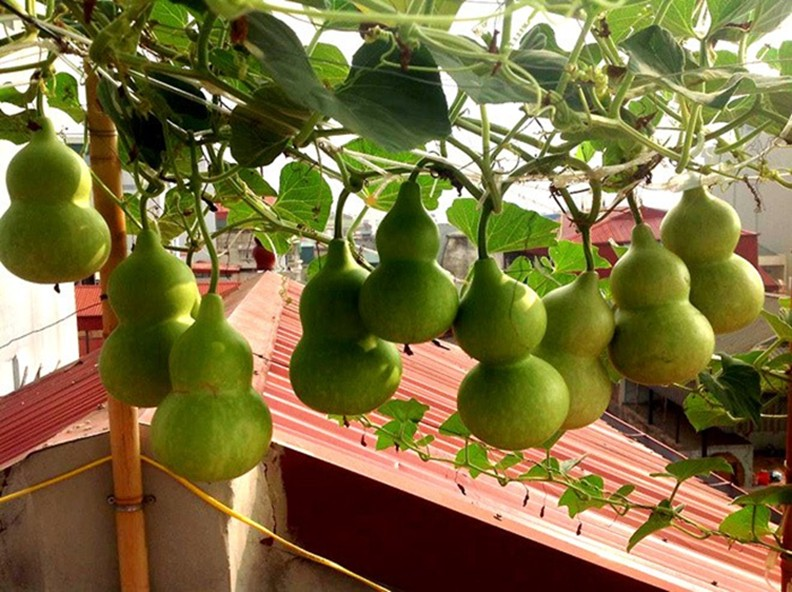
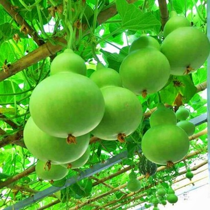

Hạt giống Bầu Hồ Lônổi tiếng với độ chuẩn giống, tỷ lệ nảy mầm cao và khả năng kháng sâu bệnh hiệu quả. Để có được một mùa vụ năng suất và chất lượng, hãy đặt mua hạt giống này ngay tại đây. Chúng tôi cũng sẽ cung cấp cho bạn hướng dẫn chi tiết về cách trồng Bầu Hồ Lô từ hạt giống để bạn có thể dễ dàng bắt đầu.
1. Tại Sao Nên Chọn Hạt Giống Bầu Hồ Lô?
Quả bầu hồ lô được sử dụng với 2 công dụng chủ yếu:
Y học cổ truyền: Được sử dụng làm thành phần của một số loại thuốc hoặc đồ dùng y học của một số nước có văn hóa Á Đông.
Quan niệm tâm linh: Quả bầu hồ lô tượng trưng cho sự may mắn, sức khỏe và sự bình an trong quan niệm tâm linh của một số nước. Nhiều người quan niệm rằng giữ quả hồ lô trong nhà có thể tạo ra một không gian an lành.
2. Chuẩn Bị Trước Khi Trồng Hạt Giống Bầu Hồ Lô
Lựa chọn hạt giống chất lượng
Hiện các Hatgiongraucu.net đang cung cấp chính hãng dòng sản phẩm Hạt giống Bầu Hồ Lô. Giá hạt giống này của chúng tôi cam kết tốt nhất thị trường. Ngoài ra khi mua hàng bạn sẽ được chúng tôi tư vấn và đồng hành trong quá trình gieo trồng chăm sóc cũng như thu hoạch sản phẩm. Hãy ủng hộ chúng tôi nhé.
Cam kết của Hạt Giống Rau Củ:
Giao đúng hàng, đủ hàng.
Kiểm hàng trước khi nhận.
Đổi trả hàng 14 ngày.
Hàng đóng gói nguyên vẹn, còn hạn sử dụng.
Một số yếu tố bạn cần chuẩn bị trước khi gieo trồng:
Đất trồng: Hạt giống bầu hồ lô là loại cây có sức sống tốt nên có thể trồng trên mọi loại đất. Nhưng để tốt nhất bạn nên sử dụng đất thịt nhẹ, giàu chất dinh dưỡng và có khả năng thoát nước tốt.
Hạt giống: Hạt giống có bán tại các cửa hàng vật tư nông nghiệp hoặc trên các website bán hạt giống uy tín.
Chậu trồng: Đường kính tối thiểu là 30cm, với kích thước này bạn chỉ nên trồng 1-3 cây để đảm bảo đủ chất dinh dưỡng. Chậu càng to, cây sẽ lớn, to nhánh và cho nhiều quả hơn.
Thời gian trồng: Nên trồng vào mùa nắng vì cây sẽ cho nhiều quả hơn và ít bị sâu bệnh
3. Quy Trình Gieo Hạt Giống Bầu Hồ Lô
Chuẩn bị đất và hạt giống
Đất trồng: Chọn loại đất tơi xốp, thoát nước tốt và có độ pH từ 6 đến 7. Bạn có thể trộn đất với phân hữu cơ để cung cấp dưỡng chất cho cây.
Hạt giống: Chọn hạt giống bầu hồ lô chất lượng từ những nguồn uy tín để đảm bảo tỷ lệ nảy mầm cao
Gieo hạt
Ngâm hạt: Trước khi gieo, bạn có thể ngâm hạt trong nước ấm khoảng 2-4 giờ để giúp hạt nở nhanh hơn.
Gieo hạt: Tạo các lỗ nhỏ trên bề mặt đất, mỗi lỗ khoảng 2-3 cm sâu. Gieo 1-2 hạt vào mỗi lỗ và lấp đất nhẹ nhàng lên trên.
Khoảng cách: Nếu gieo nhiều hạt, hãy đảm bảo khoảng cách giữa các hạt là từ 5-10 cm.
Chăm sóc sau khi gieo
Tưới nước: Sau khi gieo, tưới nước nhẹ nhàng để giữ ẩm cho đất. Không nên tưới quá nhiều nước để tránh hạt bị úng.
Đặt nơi có ánh sáng: Đặt chậu gieo hạt ở nơi có ánh sáng tốt nhưng không trực tiếp chiếu vào, để tránh làm hạt giống khô hoặc cháy.
Nhiệt độ: Giữ nhiệt độ trong khoảng 25-30°C để hạt nảy mầm thuận lợi.
Chăm sóc cây con
Tưới nước đều đặn: Khi cây con mọc lên, hãy tưới nước đều đặn, giữ đất ẩm nhưng không để đất bị úng.
Ánh sáng: Cây bầu hồ lô cần nhiều ánh sáng để phát triển khỏe mạnh. Nếu trồng trong nhà, bạn có thể bổ sung ánh sáng nhân tạo.
Tỉa cây: Khi cây con có 2-3 lá, bạn có thể tỉa bỏ các cây yếu hoặc quá sát nhau để đảm bảo không gian phát triển cho cây khỏe mạnh.
Chuyển cây ra ngoài (nếu trồng ngoài trời)
Ra ngoài: Sau khi cây con phát triển mạnh, có thể chuyển cây ra ngoài trời. Lưu ý rằng khi cây còn nhỏ, bạn nên để cây làm quen với môi trường bên ngoài bằng cách cho cây tiếp xúc dần dần với ánh sáng mặt trời.
Chăm sóc cây trưởng thành
Bón phân: Bón phân định kỳ để cung cấp dưỡng chất cho cây. Bạn có thể dùng phân hữu cơ hoặc phân NPK.
Cắt tỉa: Để cây phát triển hình dáng đẹp và khỏe mạnh, bạn cần cắt tỉa các nhánh phụ và giữ lại các nhánh chính.
Giữ ẩm: Đảm bảo đất luôn ẩm nhưng không quá ướt

Hướng dẫn cách chăm sóc và gieo trồng hạt giống bầu hồ lô
4. Chăm Sóc Bầu Hồ Lô Sau Khi Gieo Trồng
Tưới nước: Duy trì độ ẩm: Bầu hồ lô cần nhiều nước, nhưng không nên để cây bị ngập úng. Bạn nên tưới nước đều đặn để đất luôn ẩm, đặc biệt trong thời gian cây ra hoa và kết quả.
Tưới vào sáng sớm hoặc chiều mát: Điều này giúp giảm bớt khả năng bị nấm mốc do nhiệt độ và độ ẩm cao.
Bón phân: Bón phân định kỳ: Bầu hồ lô cần nhiều dinh dưỡng để phát triển mạnh mẽ và cho quả đẹp. Bạn có thể bón phân hữu cơ hoặc phân NPK có tỷ lệ 10-10-10 hoặc 20-20-20.
Bón phân lỏng: Bón phân lỏng cách tuần giúp cây hấp thụ nhanh hơn.
Bón phân khi ra hoa và kết quả: Khi cây bắt đầu ra hoa và kết quả, bạn có thể chuyển sang bón phân có nhiều kali và phốt pho (ví dụ: phân NPK 5-10-10) để giúp quả phát triển tốt hơn.
5. Thu Hoạch
Thời điểm thu hoạch: Quan sát màu sắc: Bầu hồ lô khi chín sẽ chuyển sang màu vàng hoặc cam, tùy vào giống. Nếu quả có màu sắc sáng và đều, đó là dấu hiệu cho thấy bầu hồ lô đã sẵn sàng thu hoạch.
Kiểm tra độ cứng của quả: Khi gõ nhẹ vào quả, âm thanh vang vọng thường là dấu hiệu của một quả chín và chắc. Nếu quả mềm, có thể chưa đạt độ chín hoàn toàn.
Kiểm tra cuống: Cuống của bầu hồ lô sẽ trở nên khô và cứng khi quả chín. Nếu cuống vẫn còn tươi và mềm, bầu hồ lô có thể chưa đạt độ chín hoàn chỉnh.
Cách thu hoạch: Dùng kéo cắt cuống: Để tránh làm vỡ quả, bạn nên dùng kéo sắc để cắt cuống bầu hồ lô một cách cẩn thận. Cắt sao cho để lại một đoạn cuống khoảng 5-7 cm.
Không kéo quả trực tiếp: Tránh kéo hoặc bẻ quả bầu hồ lô vì điều này có thể làm quả bị nứt, dập hoặc gây hư hỏng.
Thu hoạch từng quả: Nếu bạn có nhiều quả, thu hoạch từng quả một thay vì cố gắng thu hoạch tất cả trong một lần để tránh làm đổ cây hoặc làm hỏng quả còn lại.

Hạt giống bầu hồ lô trong mùa thu hoạch
6. Một Số Lưu Ý Khi Trồng Hạt Giống Bầu Hồ Lô
Chọn giống chất lượng: Mua hạt giống từ nguồn uy tín và đảm bảo hạt còn mới.
Chuẩn bị đất: Sử dụng đất tơi xốp, thoát nước tốt, pH từ 6-7. Có thể trộn với phân hữu cơ.
Gieo hạt: Ngâm hạt trong nước ấm trước khi gieo. Gieo sâu 1-2 cm và lấp đất nhẹ.
7. Lợi Ích Khi Trồng Bầu Hồ Lô Tại Nhà
Tăng không gian xanh: Cải thiện chất lượng không khí và tạo không gian sống dễ chịu.
Sản phẩm tự cung cấp: Thu hoạch quả bầu hồ lô để trang trí, quà tặng hoặc chế biến món ăn.
Tiết kiệm chi phí: Giảm chi phí mua cây cảnh và tự tạo hình theo sở thích.